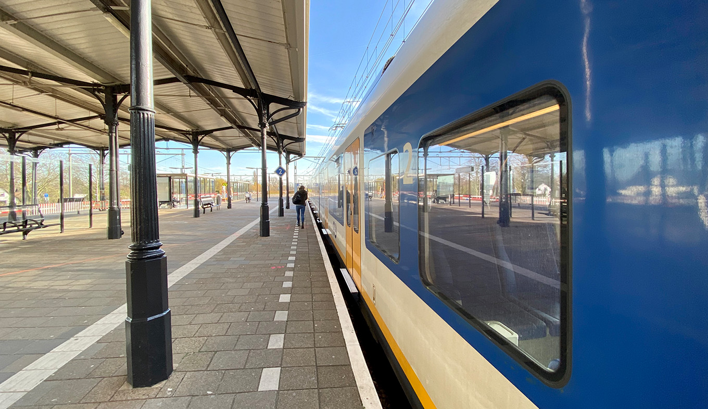
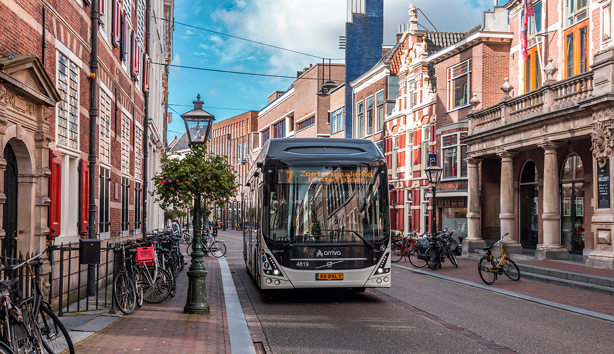
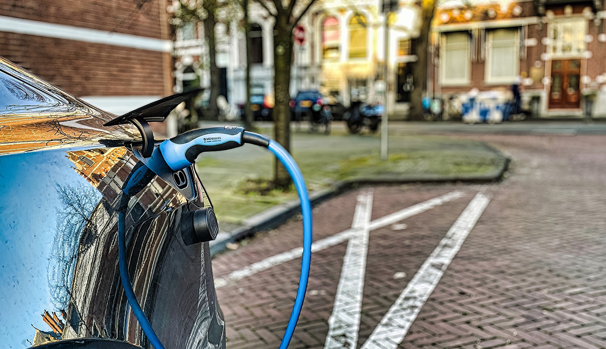
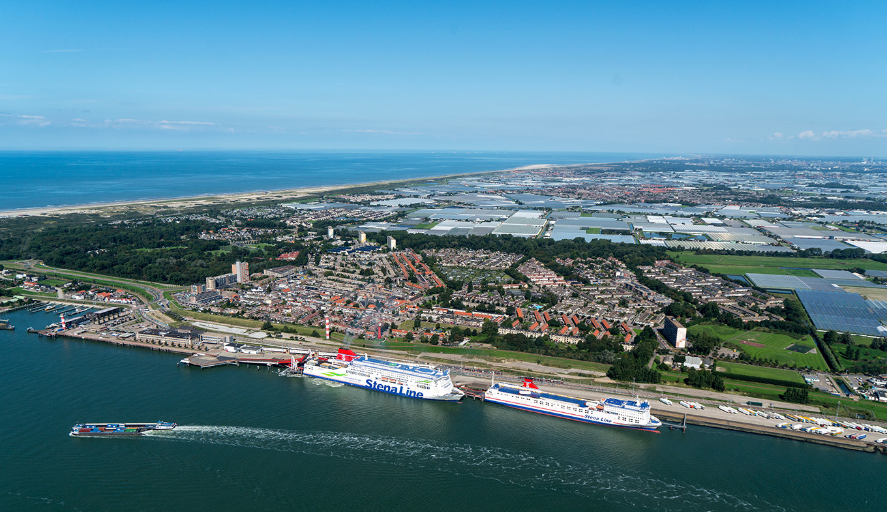
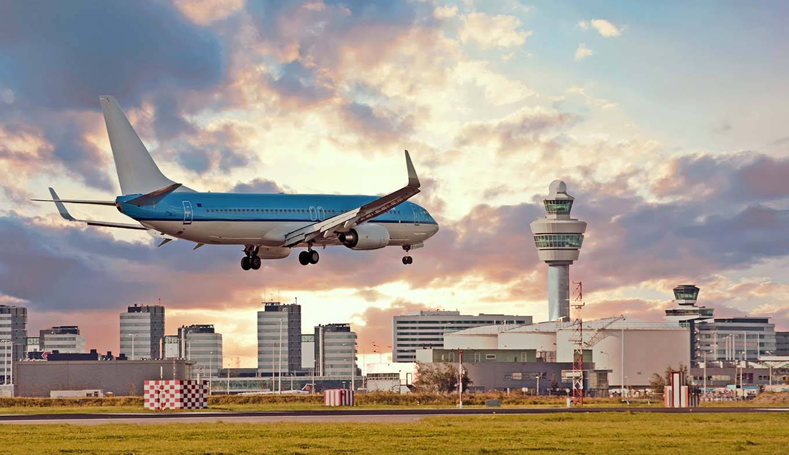
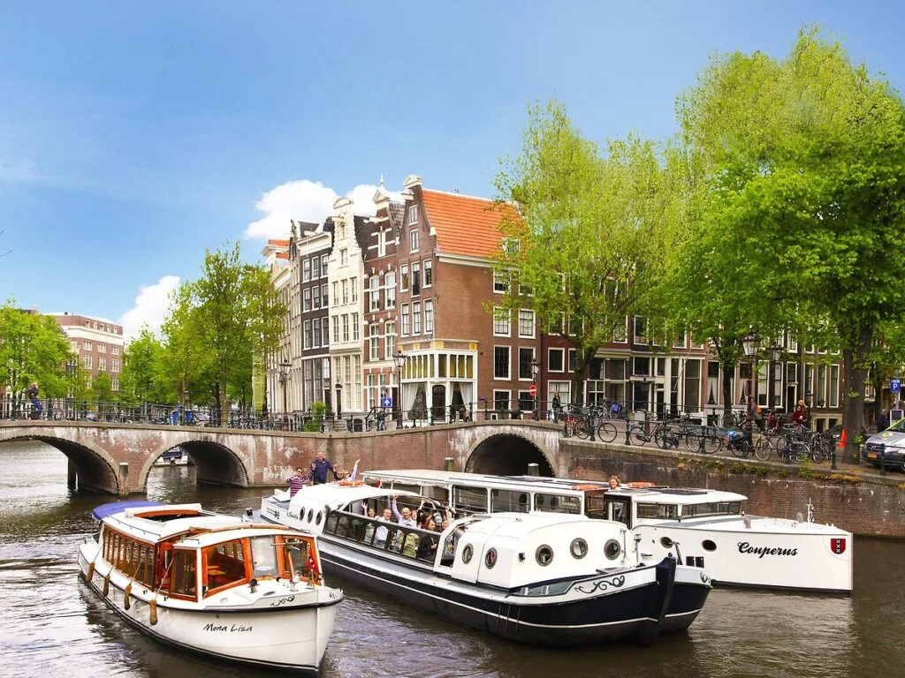

Plan Your Journey
The Netherlands is a country of beautiful landscapes, unique national parks, sandy beaches, traditional villages and green cities. It is a perfect holiday destination with something to offer for everyone. And getting here is a snap. For a small country, we have great international connections. While there are many different ways to get here, we think sustainable is best. So what's your ideal travel option?
- Make your visit to the Netherlands sustainable.
- Several convenient ways to get to the Netherlands.
- Find out which travel option suits you best.

Travel by Train
One of the most efficient and sustainable ways to reach the Netherlands. Direct connections from major European cities and a superb national rail network await.

Travel by Bus
An affordable and convenient option. International bus services connect the Netherlands with Germany, Belgium, France and the UK at budget-friendly prices.

Travel by Car
Well-maintained motorways give you the freedom to travel at your own pace. The Netherlands leads Europe in EV charging points — perfect for electric car owners.
More Ways to Get Here

Holiday on the Water
Flying to the Netherlands
By Canal & WaterwayContinue Exploring
Now that you know how to get here, discover what the Netherlands has in store for you.